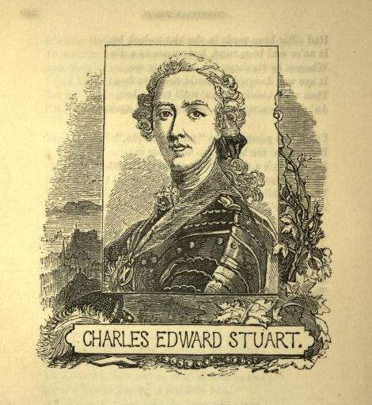
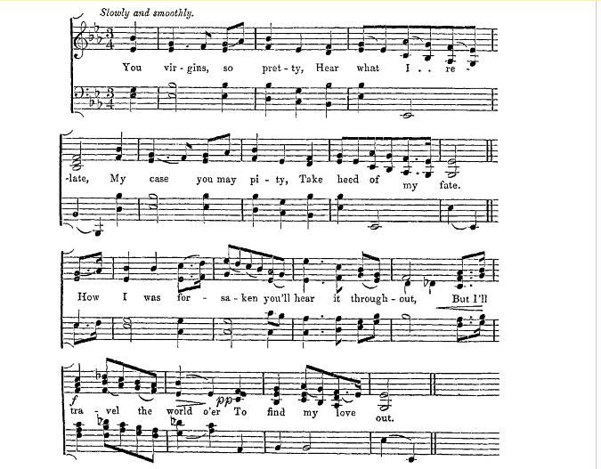
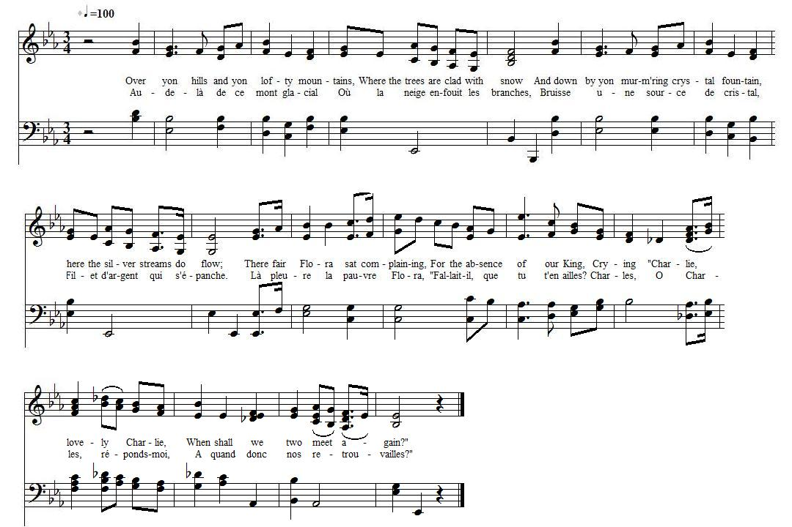

Prince Charles and Flora McDonald
Flora et Charlie
A legendary idyll
from
"The True Loyalist"
p. 46, 1779, and
Peter Buchan's "Illustrated book of Scottish Songs" P.276 (Chapter: Jacobite Songs).
Tune - Mélodie
"Over Hills and High Mountains"
from "Popular Music of the Olden Times", p.681
Sequenced by Christian Souchon
|
To the tune:
There is an air "On yonder high Mountains" quoted in the "Cobbler's Opera" (1729) and in "Sylvia or The Country Burial" (1731) and a very popular ballad in the later part of the 18th century, titled "Over Hills and high Mountains" whose tune is often referred to. Copies of this song are in the Bagford Collection (N°643, m.10, p.165) and in the Pepys Collection (iii. 165), entitled "The Wandering Maiden" or "True Love at Length united". It commenced thus: Over hills and high mountains Long time have I gone Ah! and down by the fountains By myself all alone; Through bushes and briars Being void of all care Through perils and dangers For the loss of my dear. These lines are a paraphrase of another song "Love will find out the way", that was extremely popular. Though the tune of "Over Hills ..." is said to be "new", the chances are that both tunes be identical. The present "Prince Charles and Flora McDonald" is evidently a parody of "Over Hills and High Mountains" but the tune of this ballad does not suit it perfectly: there are too many feet in the lines. In the Roxburghe Collection (ii 508), the song "The Wandering Virgin" or "The coy Lass well fitted" is set to the same "pleasant new tune, Over Hills and High Mountains". The first stanza is here printed with the tune. Source: William Chappell "Popular Music of Olden Times" (Edited by Cramer, Beale and Chappell, London 1859). The air "Over Hills and High Mountains" appears in Forbes' "Song and Fancies" (1666), in "Musick's Recreation on the Lyra-Viol" (1652), and "Musick's delight on the Cithren" (1666). Source "The Fiddler's Companion" (cf. links). One is tempted to connect the present song with James Hogg and Neil Gow's famous elegy "Flora McDonals Lament" , since Hogg says that he got the original of his "Lament" from Mr. Niel Gow , "who told me [it was] a translation from the Gaelic, but so rude that he could not publish [it]...On which I verified them anew and made them a great deal better, without altering one sentiment". This may be the first instance of a song on an alleged romance between Flora McDonald and Prince Charles Edward Stuart (whereas the latter's love affair with Clementina Walkinshaw , whom he met at Bannockburn House while conducting the siege of Stirling in 1746 and by whom he had a child later on, apparently inspired no song composer!) |
 From Peter Buchan's 'Illustrated Book of Scottish Songs'  "The Wandering Virgin" harmonized by G. A. From "Popular of Olden Times"  |
A propos de la mélodie:
Un air "Sur ces hautes montagnes" est cité dans l'"Opéra du tonnelier" (1729) et dans "Sylvia ou l'enterrement à la campagne" (1731). Par ailleurs une "ballade" très populaire dans la seconde moitié du 18ème siècle, s'intitule "Par les collines, les monts" . On trouve ce chant dans la Collection Bagford (N°643, m.10, P.165) et dans la Collection Pepys (iii. 165) où son titre est "La Vagabonde" ou "L'amour sincère enfin récompensé". Il commence ainsi: "Par les collines, les monts J'ai longtemps erré, Près des sources des vallons M'arrêtant, esseulée. Par fourrés et bruyères. Et tout m'indiffère: Les périls, les dangers... J'ai perdu l'être aimé. C'est une paraphrase d'un autre chant, "L'amour y pourvoira", qui connut son heure de gloire. Bien qu'il soit indiqué " sur une mélodie nouvelle", on peut penser que les deux timbres cités sont identiques . Le présent "Flora et Charlie" est, à l'évidence, une parodie de "Par les collines", mais le timbre de cette ballade ne s'applique qu'imparfaitement à ce second texte qui comporte plus de pieds par ligne. Dans la Roxburghe Collection (ii 508), le chant "La vierge vagabonde" ou "Coquette et coquet" se chante sur "la jolie mélodie nouvelle 'Par les collines'". On trouvera celle-ci avec les paroles ci-contre. Source: William Chappell "Musique en vogue au bon vieux temps" (Edité chez Cramer, Beale et Chappell, Londres 1859). L'air "Par les collines" figure dans "Song and Fancies" (1666) de Forbes, dans "Musick's Recreation on the Lyra-Viol" (1652), et dans "Musick's delight on the Cithren" (1666). Source "The Fiddler's Companion" (cf. liens). On est tenté de faire le lien entre le présent chant et la fameuse élégie de James Hogg et Neil Gow Jr, intitulée "Lamentation de Flora McDonald" . En effet, Hogg nous apprend qu'il tient l'original de sa "Lamentation" de M. Niel Gow, "qui me dit qu'il s'agissait d'une traduction du gaélique, mais si fruste qu'elle était impubliable. Je l'ai remise sur le métier et l'ai considérablement améliorée, sans altérer aucun sentiment." C'est peut-être le premier chant traitant d'une prétendue idylle entre Flora McDonald et le Prince Charles Edouard Stuart (alors que sa liaison avec Clémentine Walkinshaw , rencontrée à Bannockburn House, quand il faisait le siège de Stirling en 1746, et dont il eut plus tard une fille , ne semble avoir inspiré aucun chansonnier!) |
|
1. Over yon hills (
muir
) and yon lofty mountains,
Where the trees are clade with snow ; And down by yon murm'ring crystal fountain, Where the silver streams do flow; (twice) There fair Flora sat complaining, For the absence of our K[in]g, Crying "Charlie, lovely Charlie, When shall we two meet again ?" (twice) 2. Fair Flora's love it was surprising, Like to diadems in array; And her dress of the tartan plaidie Was like a rainbow in the sky. And each minute she tuned her spinnet, And Royal James was the tune, Crying, "C[harle]s, royal C[harle]s, When shalt thou enjoy thy own?" 3. When all these storms are quite blown o'er, Then the skies will rent and tear; Then C[harle]s he'll return to Britain, To enjoy the grand affair. The frisking lambs will skip over, And larks and linnets shall sweetly sing, Singing, C[harle]s, royal C[harle]s, You're welcome home to be our K[in]g. from "The True Loyalist" p. 46, 1779. |
1. La neige enfouit les branches
Des arbres sur ce mont glacial; Et la fontaine épanche Son bruissant filet de cristal. (bis) "Fallait-il, que tu t'en ailles?" S'enquiert l'infortunée Flora, "Fêterons-nous nos retrouvailles? Charles, Charles, réponds-moi!" (bis) 2. Plus qu'un rang de diadème, L'amour transfigure Flora, Et son humble plaid même De l'arc-en-ciel a l'éclat. Et le chant de Jacques résonne, Un air d'épinette entêtant: "Quand donc te rendra-t-on ton trône O fils de roi?" dit ce chant. 3. "Quand seront les nuages, Dissipés, les vents apaisés, Je reprendrai l'ouvrage Que j'entrepris. Je reviendrai. Et la linotte et l'alouette, Chacune en son chant saluera, Et toute la nature en fête, Le retour de notre Roi!" (Trad. Christian Souchon (c) 2010) |